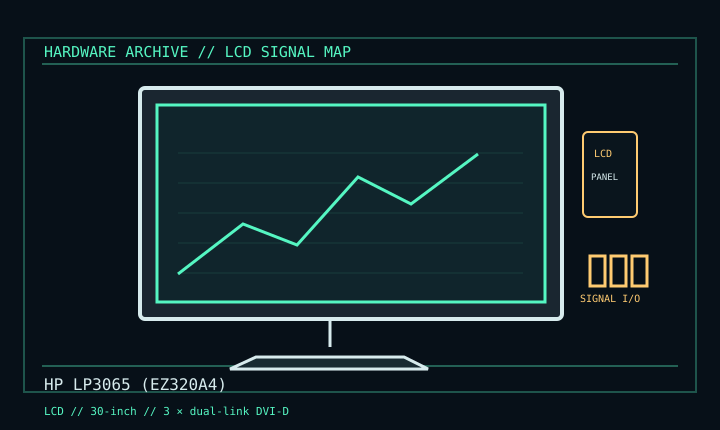

[ INDIVIDUAL COMPONENT // DISPLAYS ]
HP LP3065 (EZ320A4)
30-inch WQXGA professional workstation LCD, late 2000s. LCD

IDENTIFICATION: Verify the complete model/revision on the rear label. Specifications are tied to the cited manual/specification; variant-dependent values are qualified rather than generalized.
Specifications
| Catalog subcategory | Lcd Displays |
|---|---|
| Exact product/family | HP LP3065 (EZ320A4) |
| Era | 30-inch WQXGA professional workstation LCD, late 2000s. |
| Panel / image | 30-inch viewable TFT LCD; 2560 × 1600 at 60 Hz; 0.250 mm pixel pitch. |
| Inputs | Three dual-link DVI-D inputs with HDCP; USB 2.0 hub. No HDMI/DisplayPort. |
| Power | 118 W typical, max below 176 W, standby below 2 W; internal auto-ranging 100–240 V AC, 50/60 Hz. |
| Mechanical | Height/tilt/swivel stand and VESA 100 mm. |
Revision, signal & host compatibility
Each input still requires a dual-link source/cable for native resolution. Three sockets do not combine to form one tiled image. Distinguish LP3065/EZ320A4 from other HP 30-inch displays; check input select and HDCP requirements.
Match source signal type, sync/timing, connector pinout, bandwidth and power path to this exact display. Physical connector fit alone does not establish electrical or timing compatibility.
Preservation & repair notes
Test each DVI input at 2560 × 1600/60, USB and backlight uniformity. Record EZ320A4 and retain stand. Aging CCFL or PSU work should follow HP service documentation by qualified repairer.
Record model suffix, serial/date label, accessories, image condition, configuration, source document and repair history. CRT high-voltage, LCD backlight and OLED panel risks require appropriate service training and the correct manual.
Manufacturer manuals & references
- HP LP3065 User ManualModel operation, connections and care.
- HP LP3065 SpecificationResolution, input, power and mechanical ratings.